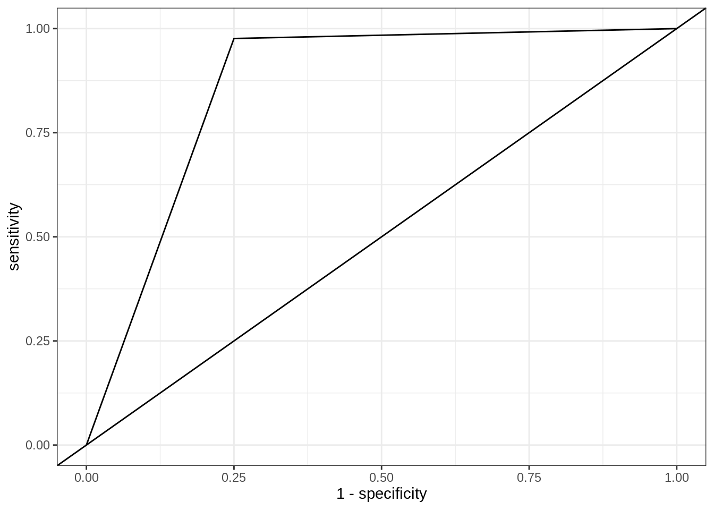

Compare R and Python: basic classifiers
For this comparison, I will compare the scikit-learn library in Python and the newly developed tidymodels meta-package in R. The main reason that I have chosen these two is because they share a lot of similarities and imposed strict frameworks in data pre-processing, modelling and evaluations.
The data that I will use is the penguins data from the R package palmerpenguins, which you can learn more about here. The response variable is a factor variable, species, indicating the species of a penguin. The other predictor variables are a mix of both numeric and factor variables. For convenience, I have reduced the number of species to two and extracted the data below in a CSV format so that Python can also use this data through pd.read_csv.
library(palmerpenguins)
library(tidyverse)
penguins %>%
na.omit %>%
dplyr::filter(species %in% c("Adelie", "Chinstrap")) %>%
readr::write_csv(path = "data/penguins_complete.csv")Importing data and getting a summary
R: tidyverse
library(tidyverse)
penguins = readr::read_csv(file = "data/penguins_complete.csv")
penguins %>% colnames()## [1] "species" "island" "bill_length_mm"
## [4] "bill_depth_mm" "flipper_length_mm" "body_mass_g"
## [7] "sex" "year"Python: pandas
import pandas as pd
penguins = pd.read_csv("data/penguins_complete.csv")
penguins.columns## Index(['species', 'island', 'bill_length_mm', 'bill_depth_mm',
## 'flipper_length_mm', 'body_mass_g', 'sex', 'year'],
## dtype='object')Decision tree classification
R
##
##
##
##
##
##
##
##
library(rpart)
library(rpart.plot)
feature_set = c('bill_length_mm', 'bill_depth_mm', 'flipper_length_mm', 'body_mass_g')
sub_penguins = penguins[,c('species', feature_set)]
dtc_model = rpart::rpart(species ~ ., data = sub_penguins,
control = rpart.control(maxdepth = 1))
table(sub_penguins$species,
predict(dtc_model, type = "class"))##
## Adelie Chinstrap
## Adelie 143 3
## Chinstrap 6 62rpart.plot(dtc_model)
Python
from sklearn.tree import DecisionTreeClassifier
from sklearn import tree
import matplotlib as plt
import matplotlib.pyplot as pltpyplot
from sklearn.metrics import confusion_matrix
feature_set = ['bill_length_mm', 'bill_depth_mm', 'flipper_length_mm', 'body_mass_g']
X = penguins[feature_set]
y = penguins.species
dtc_model = DecisionTreeClassifier(random_state = 1, max_depth = 1)
# Fit model
dtc_model.fit(X, y)## DecisionTreeClassifier(ccp_alpha=0.0, class_weight=None, criterion='gini',
## max_depth=1, max_features=None, max_leaf_nodes=None,
## min_impurity_decrease=0.0, min_impurity_split=None,
## min_samples_leaf=1, min_samples_split=2,
## min_weight_fraction_leaf=0.0, presort='deprecated',
## random_state=1, splitter='best')confusion_matrix(y, dtc_model.predict(X))## array([[143, 3],
## [ 6, 62]])##
##
##
pltpyplot.figure()
tree.plot_tree(dtc_model, filled = True, feature_names = feature_set, class_names = list(set(list(penguins.species))))pltpyplot.show()Some alternatives
R benefits greatly from contributions from the community and there are mamy ways of performing the task albeit with improvements over the standard solution, often with a slightly more considerations for the user experience. treeheatr is a good example of this. It improves on the tree diagram and uses an additional heatmap for visualisation while keeping the API simple.
library(treeheatr)
heat_tree(sub_penguins, target_lab = 'species')
Splitting data into train-test sets
While the previous code chunks use the entire data to fit a single tree model in each of the languages, this is obviously not the preferred practice for machine learning.
We will use tidymodels for R from this point forward.
R
library(tidymodels)## ── Attaching packages ────────────────────────────────────── tidymodels 0.1.2 ──## ✓ broom 0.7.3 ✓ recipes 0.1.15
## ✓ dials 0.0.9 ✓ rsample 0.0.8
## ✓ infer 0.5.3 ✓ tune 0.1.2
## ✓ modeldata 0.1.0 ✓ workflows 0.2.1
## ✓ parsnip 0.1.4 ✓ yardstick 0.0.7.9000## ── Conflicts ───────────────────────────────────────── tidymodels_conflicts() ──
## x scales::discard() masks purrr::discard()
## x dplyr::filter() masks stats::filter()
## x recipes::fixed() masks stringr::fixed()
## x dplyr::lag() masks stats::lag()
## x dials::prune() masks rpart::prune()
## x yardstick::spec() masks readr::spec()
## x recipes::step() masks stats::step()penguins = penguins %>% dplyr::mutate(species = as.factor(species))
splitting = rsample::initial_split(data = penguins, prop = 0.75)
dtc_train_model = decision_tree() %>%
set_engine("rpart") %>%
set_mode("classification") %>%
fit(species ~ ., data = training(splitting))
dtc_predictions_tbl = bind_cols(
pred_class = dtc_train_model %>%
predict(new_data = testing(splitting), type = "class"),
pred_prob = dtc_train_model %>%
predict(new_data = testing(splitting), type = "prob"))dtc_predictions_tbl2 = bind_cols(testing(splitting), dtc_predictions_tbl)
cm = conf_mat(data = dtc_predictions_tbl2, truth = "species", estimate = ".pred_class")
cm## Truth
## Prediction Adelie Chinstrap
## Adelie 38 1
## Chinstrap 0 14summary(cm)## # A tibble: 13 x 3
## .metric .estimator .estimate
## <chr> <chr> <dbl>
## 1 accuracy binary 0.981
## 2 kap binary 0.953
## 3 sens binary 1
## 4 spec binary 0.933
## 5 ppv binary 0.974
## 6 npv binary 1
## 7 mcc binary 0.954
## 8 j_index binary 0.933
## 9 bal_accuracy binary 0.967
## 10 detection_prevalence binary 0.736
## 11 precision binary 0.974
## 12 recall binary 1
## 13 f_meas binary 0.987Python
from sklearn.model_selection import train_test_split
train_X, test_X, train_y, test_y = train_test_split(X, y, random_state = 0, train_size = 0.75)
dtc_train_model = DecisionTreeClassifier(random_state = 1, max_depth = 2)
dtc_train_model = dtc_train_model.fit(train_X, train_y)
dtc_predictions = dtc_train_model.predict(test_X)from sklearn.metrics import classification_report
cr = classification_report(
y_true = test_y,
y_pred = dtc_predictions)
print(cr)## precision recall f1-score support
##
## Adelie 0.95 1.00 0.97 38
## Chinstrap 1.00 0.88 0.93 16
##
## accuracy 0.96 54
## macro avg 0.97 0.94 0.95 54
## weighted avg 0.96 0.96 0.96 54ROC curve
R
roc_curve(dtc_predictions_tbl2, truth = "species", estimate = ".pred_Adelie") %>%
ggplot(aes(x = 1 - specificity, y = sensitivity)) +
geom_path() +
geom_abline() +
theme_bw()
Python
from sklearn.metrics import roc_curve
y_pred_prob = dtc_train_model.predict_proba(test_X)[:,1]
fpr, tpr, thresholds = roc_curve(test_y, y_pred_prob, pos_label = "Chinstrap")
# Plot ROC curve
pltpyplot.close()
pltpyplot.plot([0, 1], [0, 1], 'k--')
pltpyplot.plot(fpr, tpr)
pltpyplot.xlabel('False Positive Rate')
pltpyplot.ylabel('True Positive Rate')
pltpyplot.title('ROC Curve')
pltpyplot.show()k-fold cross-validation
Python
from sklearn.model_selection import RepeatedKFold
from sklearn.model_selection import cross_val_score
from sklearn.metrics import f1_score, make_scorer
import numpy as np
cv = RepeatedKFold(n_splits = 5, n_repeats = 20, random_state = 1)
dtc_train_model = DecisionTreeClassifier(random_state = 1, max_depth = 2)
scorer = make_scorer(f1_score, pos_label = 'Adelie')
scores = cross_val_score(estimator = dtc_train_model, X = train_X, y = train_y, scoring = scorer, cv = cv) ## n_jobs = -1 can be used for parallelisation
print("F1 statistics, mean (sd): " + str(np.round(np.mean(scores), 4)) + "(" + str(np.round(np.std(scores), 4)) + ")")## F1 statistics, mean (sd): 0.9474(0.0281)Imputation
Removing rows with missing values
R
missing_penguins = readr::read_csv("data/penguins.csv")##
## ── Column specification ────────────────────────────────────────────────────────
## cols(
## species = col_character(),
## island = col_character(),
## bill_length_mm = col_double(),
## bill_depth_mm = col_double(),
## flipper_length_mm = col_double(),
## body_mass_g = col_double(),
## sex = col_character(),
## year = col_double()
## )feature_set = c('bill_length_mm', 'bill_depth_mm', 'flipper_length_mm', 'body_mass_g')
X = missing_penguins[,c('species', feature_set)]
X_dropped = na.omit(X)Python
missing_penguins = pd.read_csv("data/penguins.csv")
missing_penguins.isnull().any()## species False
## island False
## bill_length_mm True
## bill_depth_mm True
## flipper_length_mm True
## body_mass_g True
## sex True
## year False
## dtype: boolmissing_penguins.isnull().sum()## species 0
## island 0
## bill_length_mm 2
## bill_depth_mm 2
## flipper_length_mm 2
## body_mass_g 2
## sex 11
## year 0
## dtype: int64feature_set = ['bill_length_mm', 'bill_depth_mm', 'flipper_length_mm', 'body_mass_g']
X = missing_penguins[feature_set]
# rows_with_missing_values = [row for row in X.index if X.iloc[row,:].isnull().any()]
X_dropped = X.dropna(axis = "index")Median imputation
R
library(imputeMissings)##
## Attaching package: 'imputeMissings'## The following object is masked from 'package:dplyr':
##
## computeimputed_X = impute(data = X, method = "median/mode")Python
from sklearn.impute import SimpleImputer
median_imputer = SimpleImputer(strategy = "median")
imputed_X = pd.DataFrame(median_imputer.fit_transform(X),columns=feature_set)
imputed_X.isnull().any()## bill_length_mm False
## bill_depth_mm False
## flipper_length_mm False
## body_mass_g False
## dtype: bool